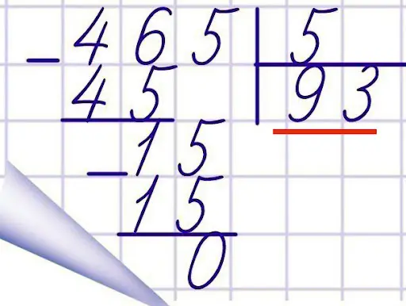
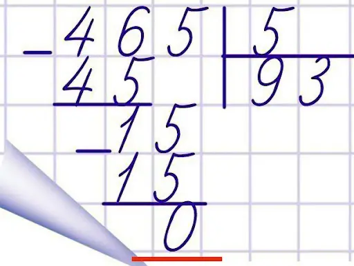
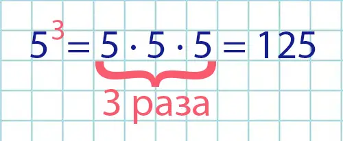

Арифметические операции
В языке Python есть операторы, которые выглядят как специальные символы, предоставляющие вычисления, такие как сложение, умножение и др.
| Оператор в математике | Оператор в Python | Описание | Приоритет | Пример |
|---|---|---|---|---|
| + | + | Сложение | 3 | 9 + 2 = 11 |
| - | - | Вычитание | 3 | 9 - 2 = 7 |
| ∙ | * | Умножение | 2 | 9 * 2 = 18 |
| : | / | Деление | 2 | 9 / 2 = 4.5 |
|  | // | Целочисленное деление (деление, при котором возвращается целая часть) | 2 | 465 // 5 = 93 |
|  | % | Делению по модулю (нахождение остатка) | 2 | 465 % 5 = 0 |
|  | ** | Возведение в степень | 1 | 5 ** 3 = 125 |
При последовательном использовании нескольких арифметических операций их выполнение производится в соответствии с приоритетом. В начале выполняются операции с большим приоритетом. Если необходимо изменить приоритет операции, то используются скобки:
>>>3 * 2 ** 3
>>>24
>>>(3 * 2) ** 3
>>>729Составные арифметические операции с присваиванием
В языке Python имеются специальные операции, которые являются объединением арифметической операции с операцией присваивания.
Операторы вроде показанного ниже в программах встречаются достаточно часто:
>>>а = а + 4В языке Python этот оператор можно записать следующим образом:
>>>а += 4В этой версии оператора использована составная операция присваивания +=. Оба оператора выполняют
одно и то же действие: они увеличивают значение переменной a на 4.
| Оператор | Полная запись | Короткая запись |
|---|---|---|
+= |
a = a + 4 |
a += 4 |
-= |
a = a - 3 |
a -= 3 |
*= |
a = a * 2 |
a *= 2 |
/= |
a = a / 6 |
a /= 6 |
//= |
a = a // 8 |
a //= 8 |
%= |
a = a % 10 |
a %= 10 |
**= |
a = a ** 0.5 |
a **= 0.5 |
Обработка цифр числа
Одной из часто используемых задач является нахождение цифр числа. Для того чтобы найти все цифры целого положительного числа, нужно использовать две арифметические операции.
-
Нахождение последней цифры числа.
Для нахождения последней цифры числа нужно исходное число поделить на 10 и найти остаток от деления:
>>>1 % 10 >>>1 >>>23 % 10 >>>3 >>>123456 % 10 >>>6 -
Удаление цифр числа справа.
Для удаления определенного количества цифр с конца числа нужно использовать целочисленное деление:
>>>23 // 10 >>>2 >>>123456 // 100 >>>1234 >>>123456 // 10000 >>>12Обратите внимание, что, например, если мы хотим удалить в числе 4 цифры справа, то нам нужно исходное число поделить на 10000 (простыми словами: количество нулей совпадает с количеством цифр, которые мы хотим удалить).
Комбинируя эти операции, можно находить любую цифру любого целого положительного числа:
>>>1234 % 10
>>>4
>>>1234 // 10 % 10
>>>3
>>>1234 // 100 % 10
>>>2
>>>1234 // 1000
>>>1Пример
Требуется найти сумму цифр положительного трёхзначного числа x.
1x = int(input())
2a = x // 100
3b = x // 10 % 10
4c = x % 10
5d = a + b + c
6print(f"{d}")
>>>123
>>>6